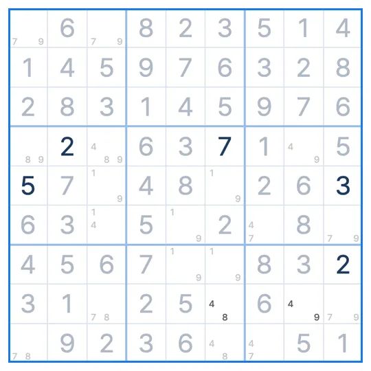

SUDOKU TECHNIQUE · Uniqueness
BUG+1
Bivalue Universal Grave
BUG+1 applies when every empty cell has two candidates except one cell with three. That cell is the digit that appears three times in its row, column or box.
- Board state
- Every empty cell has 2 candidates, one has 3
- Where to look
- The cell with three candidates
- What to do
- Fill in the digit that appears three times
The BUG+1 pattern
Every empty cell on the board has two candidates, and only R5C5 has three: 2, 6 and 7. The diagram shows row 5. In row 5, 2 and 6 each appear twice, but 7 appears three times (columns 2, 5 and 8).
Why this digit?
Suppose R5C5 were 2 or 6 instead of 7. Then every empty cell on the board would have two candidates, with each digit appearing twice in every line and box.
A board in that state does not have a single answer: swapping the candidates around still follows the rules. A proper sudoku has exactly one answer, so that cannot happen. R5C5 is therefore 7, the digit that appears three times in its line or box.
How to find the BUG+1
- With all candidates written, check that exactly one cell has three and every other empty cell has two.
- Find the digit that appears three times in that cell's row, column or box.
- Fill the cell with that digit.
Common questions
What does BUG stand for?
Bivalue Universal Grave. Every cell is bivalue (two candidates), a dead end where the answer would split in two.
What if two cells have three candidates?
Then it is not BUG+1. It only works with exactly one such cell.
Can I rely on the puzzle having one answer?
Every Sudoku League puzzle is built to have exactly one answer. On puzzles with several answers this technique does not apply.
Related techniques
IN THE SUDOKU LEAGUE APP
Stuck? A hint shows you the BUG+1
When you are stuck, a hint marks the three-candidate cell and the digit to fill in. In Technique Practice you learn the BUG+1 on a real puzzle. The first board walks you through the pattern and the reason, and on the next one you find it yourself.
